Python Advanced (2021-12-01 - 2021-12-03)¶
Day 1¶
Basics Recap¶
Discussion about Java’s TreeSet, vs. Python’s searchable things.
TreeSet sounds like a balanced binary tree, like some form of a red black tree
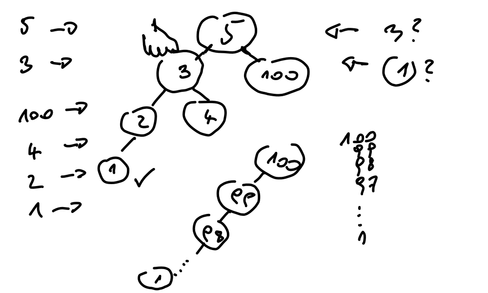Hash table basics. Python’s are most likely much more elaborate (randomized and whatnot).
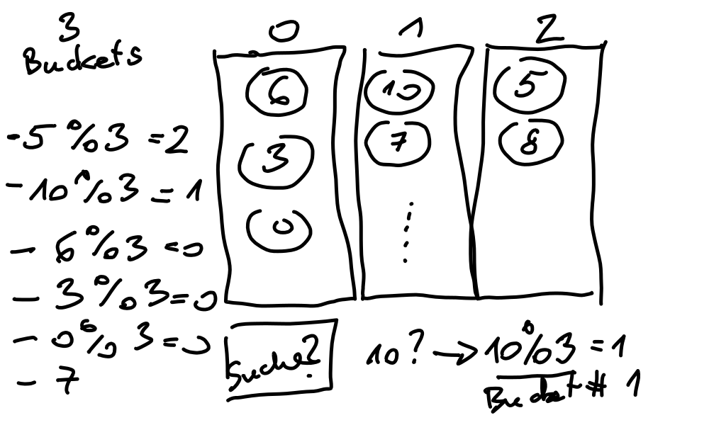
Comprehensions (
list,set,dict). (No generator expressions though.) See Notebook.
{kind=link}
{kind=link}
Group Project Preparation¶
At the basis: pytest Introduction, By Example
Talking about IoT sensors posting crap into cloud
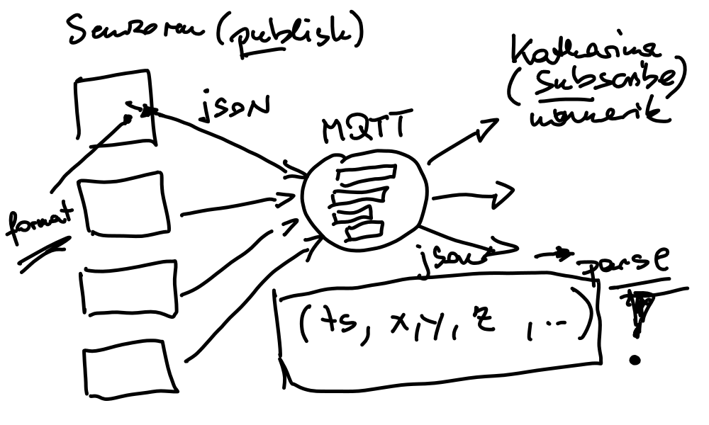Which kind of crap will sensors post into cloud?
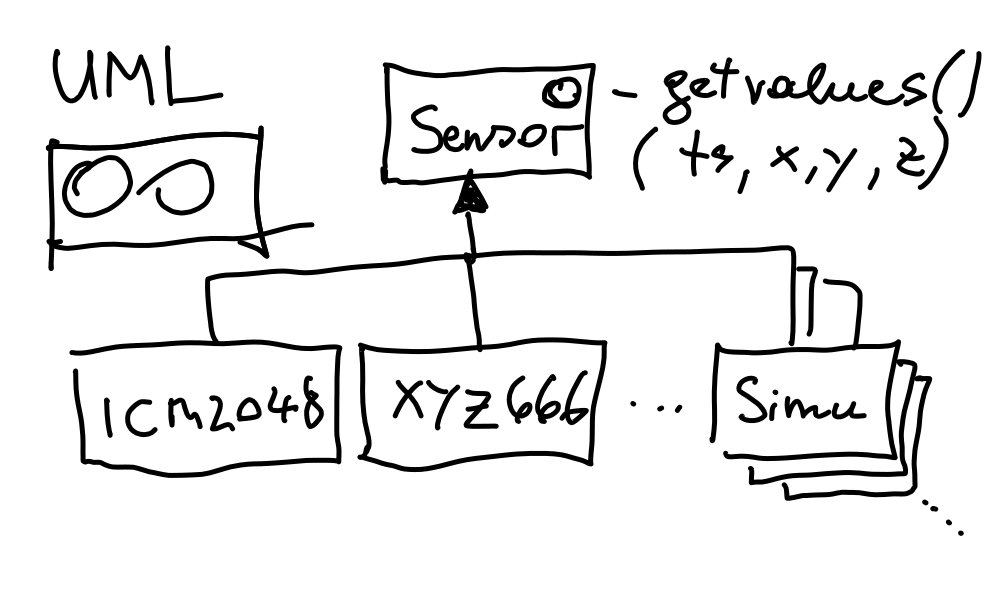Sensor hardware (irrelevant to us). We write software to deal with it
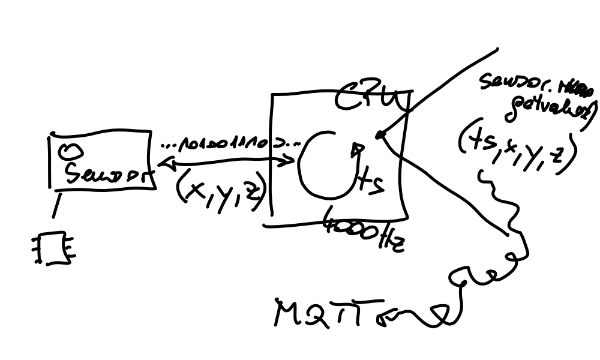We do not want to have
… a real sensor where we need a Diesel engine to make it send out vibrations. We just want a sensor that send out vibrations when we tell it to.
… a big fat OPC/UA broker in the middle. Not even a lighter MQTT broker. Nor do we want to depend on an internet cloud provider for testing.
We sure can do something with multithreading. Let the sensor threads hammer their data into a thread-safe queue (as an in-process replacement for a fat broker).
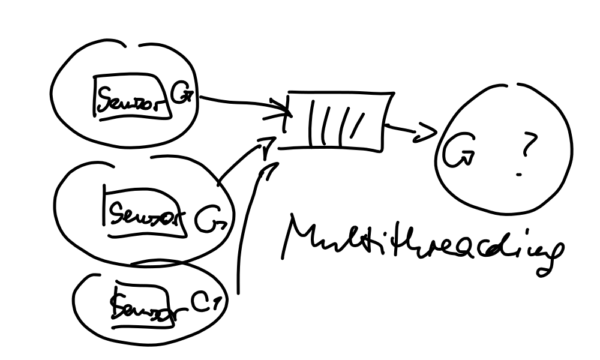
{kind=link}
{kind=link}
{kind=link}
{kind=link}
{kind=link}
Day 2¶
Plan: write a number of sensor classes
SensorRandomSensorSineSensorConstant
All these sensors should be decoupled from wall clock time - testing time series data is hard when you must deal with time. We don’t.
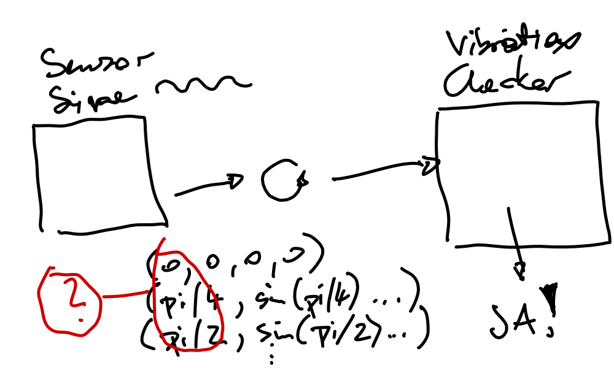 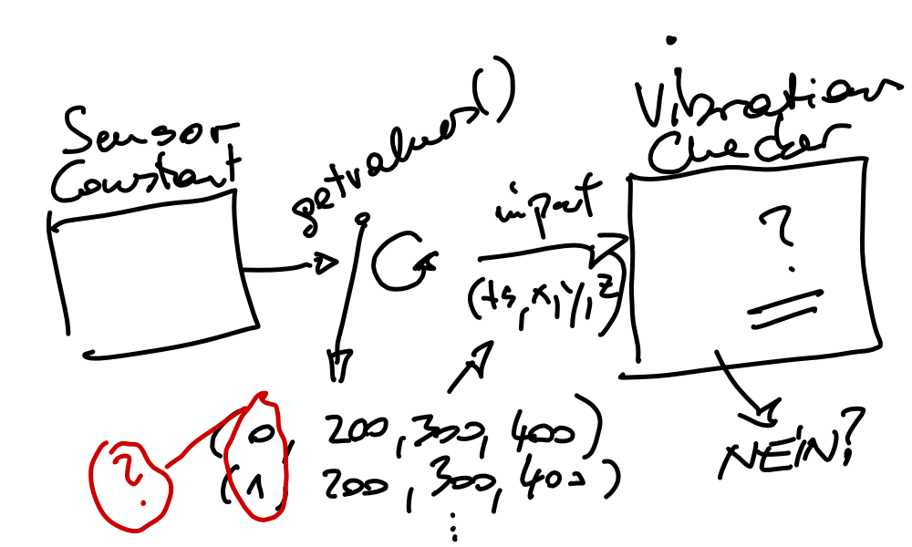{kind=link}
{kind=link}
Wild hacking expected.
Iterating Intelligently: Generators, and the Iterator Protocol
Git workflow question, “What commit local? What push pull?”
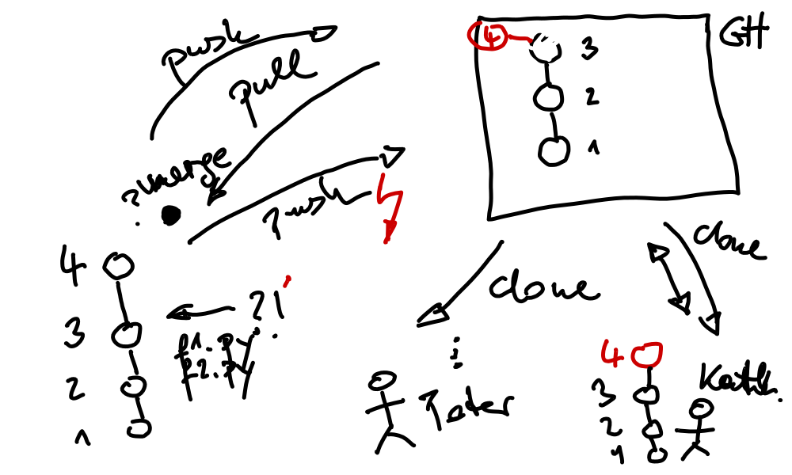Last topic for today: Multithreading
{kind=link}
TODO
jjj refer to test cases
jjj refer to thread series
jjj refer to tests for tomorrow
Day 3¶
-
Reiterate, was a bit fast yesteray.
Interfaces, abstract base classes ⟶ python:library/abc
Exercise: MQTT transport format - serialize/deserialize - for sensor tuples
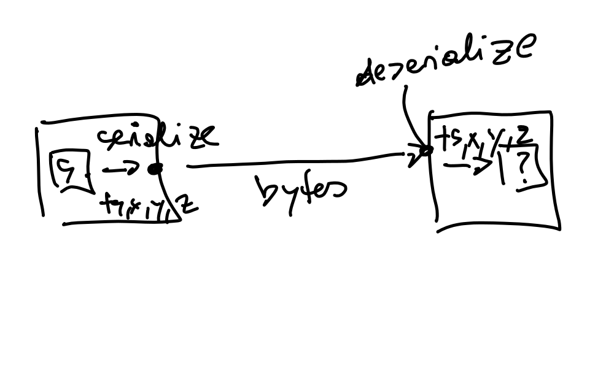 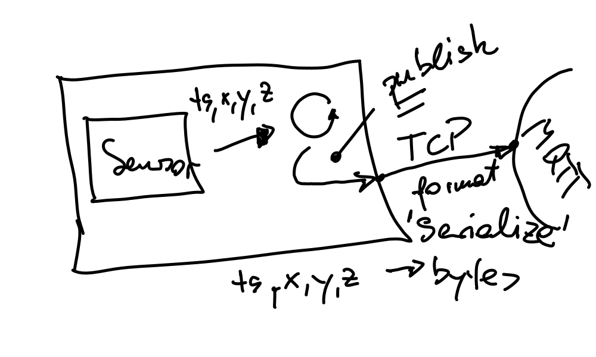 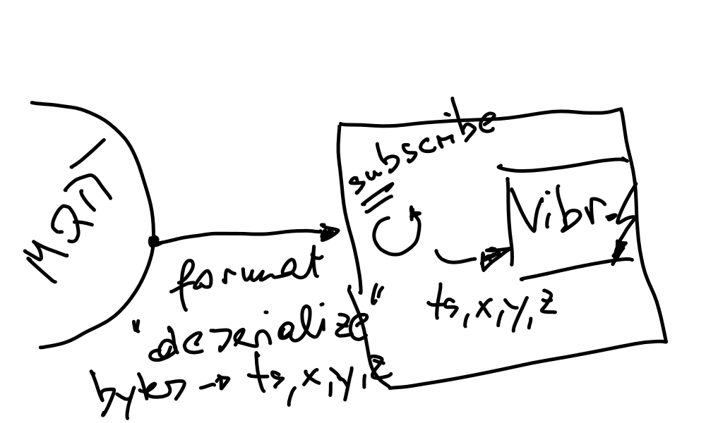(ts, x, y, z)⟶ python:library/jsonNote
Don’t forget to include error tests. JSON exceptions must not get swallowed, at least. python:library/json
MQTT livehacking maybe? Complete MQTT walkthrough? 1h.
MQTT.
Publish sensor data
Use our json
blah.exchangeformatmodule. Seetests/test_mqtt_format.pyfor how it works.Publish sensor data row by row, at an interval (Should I? python:library/argparse?)
Subscribe at the other end, using https://mosquitto.org/man/mosquitto_sub-1.html
Discuss what to do
Average? Over a number of values? Hacked in a minute.
CSV?
Live hacking? Figure out writer. CSV Files
python:library/csv ⟶ link
-
Requirement: JSON deserialize must raise a
DeserializeError.Notebook: exception handling
base class last
finally?else?
Create exception hierarchy for our little project. Live hacking.
-
Quick livehack demo what can be done.
MATLAB replacement
numpy:index
{kind=link}
{kind=link}
{kind=link}
{kind=link}
{kind=link}